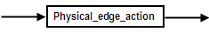
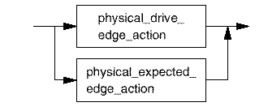

Edge action
Edge actions get defined by the WFDF command, and are ultimately programmed into the hardware using the WAVE command.

Physical edge action:

Edge actions get defined by the WFDF command, and are ultimately programmed into the hardware using the WAVE command.

